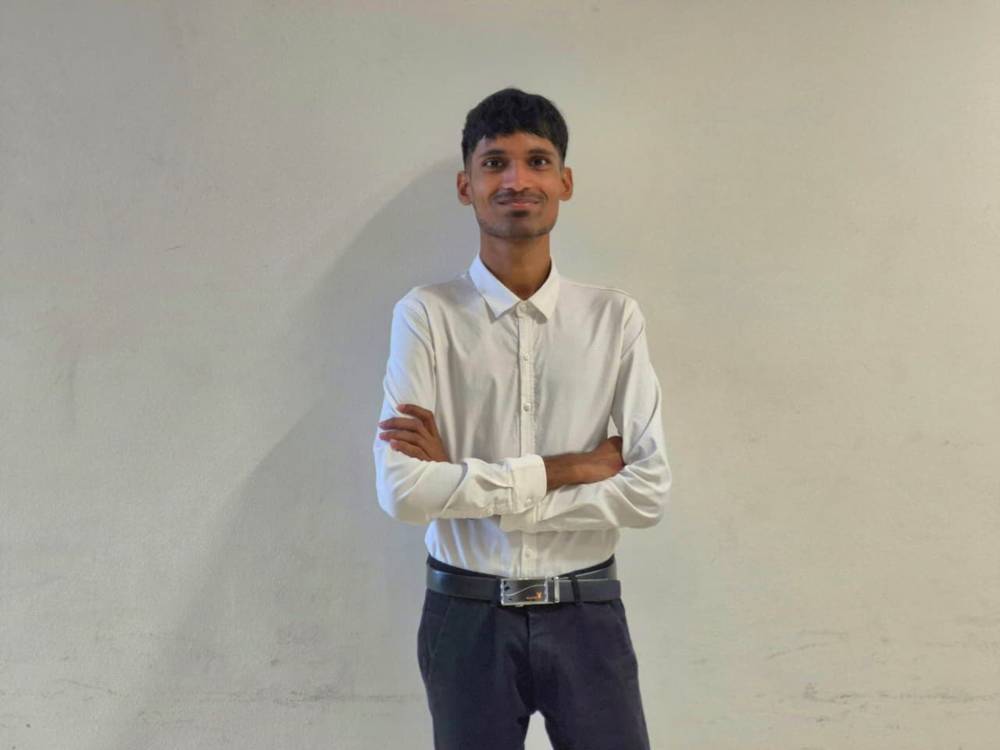

First Name: Numaan Mohammad
Last Name: Tarsoo
StudentID: 387238219
Date of birth: 02 May 2003
Age: 23
Address: Port-Loius,Camp Chapelon,Paille
Profession: Emerging student in Interactive and Digital Media
Biography / Description
I am an Interactive and Digital Media student with a focus on UX/UI design, digital storytelling, 2D & 3D Animation, and front end development. My academic projects include designing interactive prototypes, developing small web applications, and producing multimedia content that explores how people engage with technology. I am particularly interested in human computer interaction, motion graphics, and 2D & 3D Animation. I’m currently seeking opportunities to apply my skills in a professional environment where I can collaborate, learn, and contribute to meaningful digital experiences.
When I’m not working on school projects, you’ll probably find me sketching ideas, exploring new design trends, or testing out creative software. I’m passionate about growing as a designer and collaborating with others who love digital creativity. I want to help startups, agencies, and established brands to translate their ideas into clear, memorable visuals. My work blends clean design with strategic thinking, ensuring every project not only looks good but communicates it messages in a very effective way.
I love collaborating with people who are passionate about what they do and want visuals that reflect that passion.
Skills
- Creative Thinking
- Problem Solving
- Communication
- Teamwork